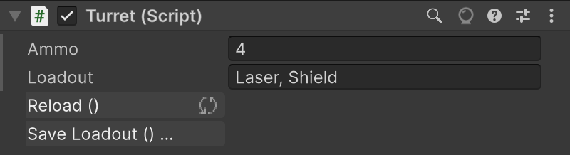
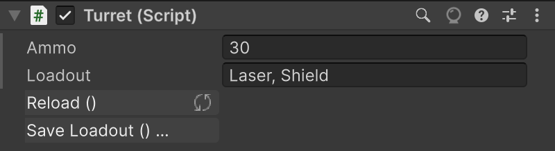

Before

Click Reload
After

Ctrl+Z
Undone

Run SaveLoadout()
This cannot be undone. What it does:
- writes a file (Turret.cs, line 15)
Undone with Ctrl+Z, or it asks first.


This cannot be undone. What it does:
- writes a file (Turret.cs, line 15)